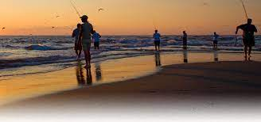
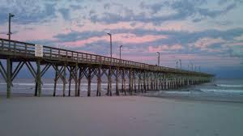

My Best Catches
This Bass was caught in Lake Norman with an earthworm on a bottom rig. Pretty unusual way to catch a bass!

This catfish was caught in about 4 feet of water. There are some giants in the shallow creeks around Raleigh, North Carolina.

This Blackfin Tuna was caught off the coast of Aruba. Only fish of the day, but it was a once in a lifetime trip!
Home
Discover all you want to know about the different species of fish in North Carolina. Learn what to use to catch a lot of fish and where to drop your rod in!
Best Species to Target in North Carolina
Top North Carolina Fishing Destinations
The best place to fish in North Carolina is Cape Hatteras. Access to the Outer Banks is what makes this a top fishing destination on the East Coast. A quick trip to the gulf stream and it will be the sportfishing event of a lifetime!
Topsail Beach also has an abundance of fish species and is a much easier drive for North Caroina residents that want to condense their fishing into a day trip.
Favorite Baits for Saltwater
This bait will catch anything from Flounder to Tiger Sharks! Attracts all kinds of fish.

Cut bait is another good universal bait. Anything fish that eats other fish will love this snack.
Not every species will be willing to attack a live bait, but if they do, be ready for a fight! You have a predatory fish on the end of your line.